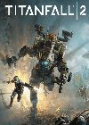
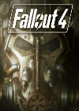
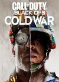

1.
Titanfall 2
Release Date: 28th October 2016
Titanfall 2 is a first-person shooter video game,
developed by Respawn Entertainment and published
by Electronic Arts. A sequel to 2014's Titanfall,
the game was released worldwide on October 28,
2016 for Windows, PlayStation 4, and Xbox One.
Review:
A brilliant shooter
which mix's up gameplay with the involvement of titans. The change of gameplay from these makes the
gameplay interesting and fun with the tide of the game being able to change at anytime. In terms of
graphics the game is massively ahead of its time with the game looking phenomenal, with optimisation
being on point even with weaker computer hardware. Defiantly a game I see myself sinking hours into.
2.
Spider-man
Release Date: 7th September 2018
Marvel's Spider-Man is a 2018 action-adventure
game developed by Insomniac Games and published
by Sony Interactive Entertainment. Based on the
Marvel Comics superhero Spider-Man, it is inspired
by the long-running comic book mythology and
adaptations in other media.
Review:
A brilliant shooter
which mix's up gameplay with the involvement of titans. The change of gameplay from these makes the
gameplay interesting and fun with the tide of the game being able to change at anytime. In terms of
graphics the game is massively ahead of its time with the game looking phenomenal, with optimisation
being on point even with weaker computer hardware. Defiantly a game I see myself sinking hours into.

3.
Fallout 4
Release Date: 10th November 2015
Fallout 4 is an action role-playing game developed
by Bethesda Game Studios and published by Bethesda
Softworks. It is the fourth main game in the Fallout
series and was released worldwide on November 10, 2015,
for Microsoft Windows, PlayStation 4 and Xbox One.
Review:
A brilliant shooter
which mix's up gameplay with the involvement of titans. The change of gameplay from these makes the
gameplay interesting and fun with the tide of the game being able to change at anytime. In terms of
graphics the game is massively ahead of its time with the game looking phenomenal, with optimisation
being on point even with weaker computer hardware. Defiantly a game I see myself sinking hours into.
4.
Detroit Become Human
Release Date: 24th April 2018
Detroit: Become Human is a 2018 adventure game developed
by Quantic Dream and published by Sony Interactive Entertainment.
In a world of humans and androids you decide the fate of your
story. Will you side with the humans or will you set androids
free? The choice is yours.
Review:
A brilliant shooter
which mix's up gameplay with the involvement of titans. The change of gameplay from these makes the
gameplay interesting and fun with the tide of the game being able to change at anytime. In terms of
graphics the game is massively ahead of its time with the game looking phenomenal, with optimisation
being on point even with weaker computer hardware. Defiantly a game I see myself sinking hours into.

5.
Call Of Duty Cold War
Release Date: 13th November 2020
Call of Duty: Black Ops Cold War is a 2020 first-person
shooter video game developed by Treyarch and Raven
Software and published by Activision. Building upon the previous
entries in the series, takes us to the cold war bringing
outstanding graphics and raytracing.
Review:
A brilliant shooter
which mix's up gameplay with the involvement of titans. The change of gameplay from these makes the
gameplay interesting and fun with the tide of the game being able to change at anytime. In terms of
graphics the game is massively ahead of its time with the game looking phenomenal, with optimisation
being on point even with weaker computer hardware. Defiantly a game I see myself sinking hours into.